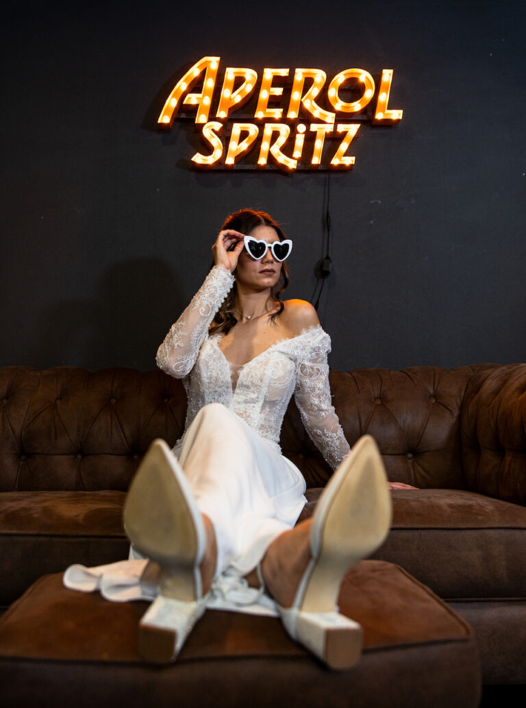
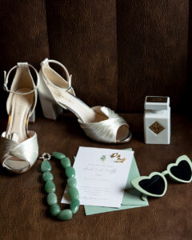

Die Hochzeitsplanung beginnt oft mit Vorfreude, Pinterest-Boards und großen Träumen – und entwickelt sich schneller als gedacht zu einem inneren Spagat zwischen Erwartungen, Entscheidungen und Unsicherheiten.
Bin ich zu früh – oder schon zu spät mit der Planung?
Eine der häufigsten inneren Fragen von Bräuten. Zwischen „Wir haben ja noch Zeit" und „Alle anderen sind weiter als ich" entsteht schnell Druck.
Die Wahrheit: Jede Hochzeit hat ihren eigenen Zeitplan. Wichtig ist nicht das Tempo, sondern die Struktur.

Machen wir das so, wie man es „richtig" macht?
Viele Bräute haben Angst, etwas falsch zu machen:
- eine untypische Tagesstruktur
- keine klassische Sitzordnung
- kein traditionelles Programm
Aber ganz ehrlich, es gibt kein „richtig" oder „falsch" – nur stimmig oder nicht stimmig für euch.
Reicht unser Budget überhaupt aus?
Diese Frage beschäftigt fast jede Braut – unabhängig vom Budget. Bräute fragen sich:
- Können wir uns unsere Wünsche leisten?
- Müssen wir Abstriche machen?
- Wo lohnt es sich zu investieren?
Merke dir, ein realistisches Budget bedeutet nicht Verzicht, sondern bewusste Entscheidungen.


Wie viele Gäste sind „normal"?
Viele Bräute vergleichen sich – oft unbewusst. Typische Gedanken:
- Ist unsere Hochzeit zu klein?
- Oder zu groß?
- Wen „muss" man einladen?
Die richtige Gästeanzahl ist die, bei der ihr euch wohlfühlt – nicht die, die erwartet wird.
Was, wenn es am Hochzeitstag nicht perfekt läuft?
Eine sehr ehrliche, oft verschwiegene Sorge. Bräute fragen sich:
- Was, wenn der Zeitplan nicht eingehalten wird?
- Wenn etwas vergessen wird?
- Wenn ich den Tag nicht genießen kann?
Perfektion ist kein Garant für einen schönen Hochzeitstag – Gelassenheit schon.

Wie schaffe ich es, den Hochzeitstag wirklich zu genießen?
Viele Bräute fürchten, nur zu funktionieren statt zu fühlen. Genuss entsteht nicht durch Kontrolle, sondern durch Vertrauen – in Planung, Ablauf und Menschen.
Darf ich Dinge anders machen als meine Familie es erwartet?
Ein sensibles Thema – und extrem häufig. Ja! Eine Hochzeit darf verbinden, aber sie muss euch widerspiegeln – nicht alte Erwartungen erfüllen.
All diese Fragen zeigen vor allem eines: Du nimmst deine Hochzeit ernst! Du willst nichts „einfach irgendwie" machen. Du willst eine Hochzeit, die sich richtig anfühlt – nicht nur gut aussieht.
Und genau das ist der wichtigste Punkt: Nicht Perfektion macht eine Hochzeit besonders. Nicht Regeln. Nicht Erwartungen. Nicht Vergleiche. Sondern Entscheidungen, die sich für euch stimmig anfühlen. Ein Ablauf, der euch Ruhe gibt. Eine Planung, die euch Sicherheit schenkt. Und ein Tag, an dem ihr nicht funktioniert – sondern fühlt.
Hochzeitsplanung darf leicht sein. Strukturiert. Klar. Und trotzdem emotional. Ohne Dauerstress. Ohne Überforderung. Ohne das Gefühl, ständig etwas falsch zu machen.